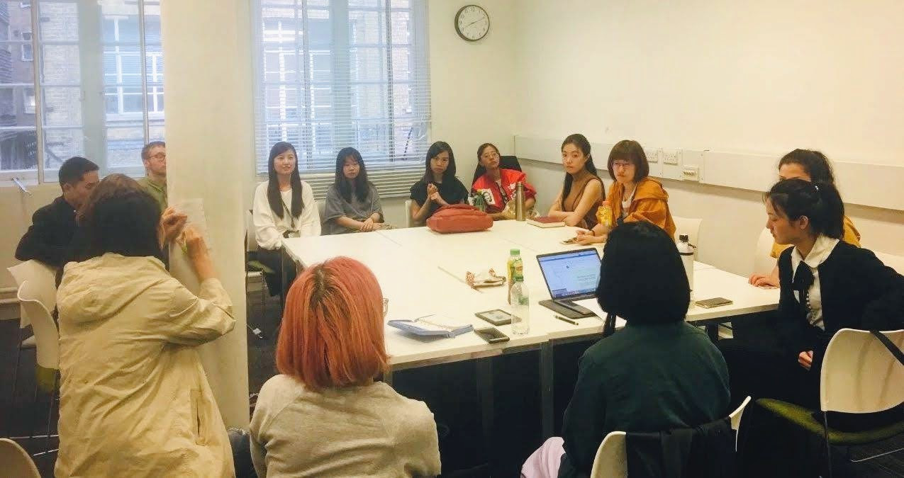
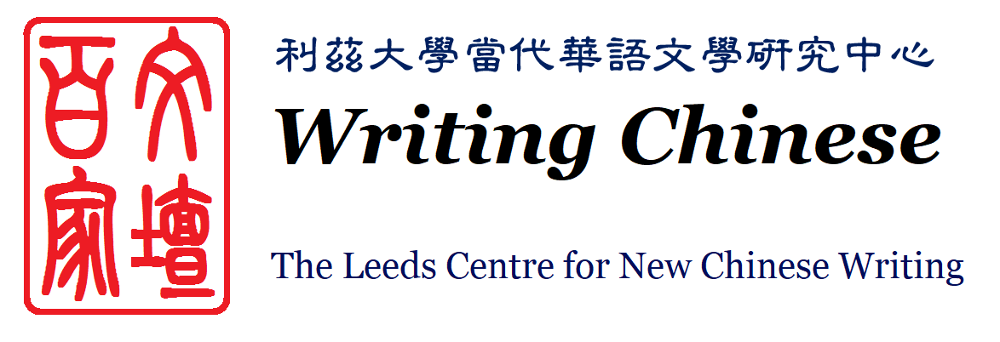
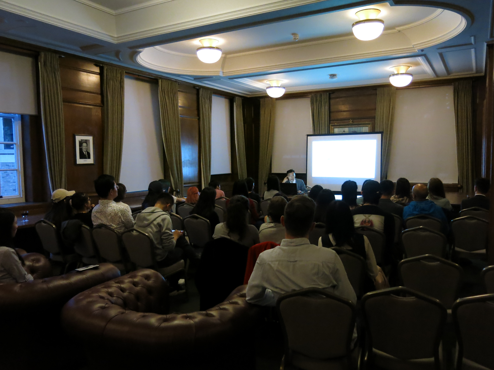

Organised by the London Science Fiction Research Community, alongside members of Science Fiction Beyond the West and our London Chinese Science Fiction Group.
[1st October 2020]

Happy 1st Birthday to us!
We celebrate our first year of activities with a round up of our readings and events, with thanks to our community.
[20th April 2020]

Symposium: 'Genre Fiction in Contemporary China, and its Reception in the West'
A meeting of authors, translators, publishers and academics with presentations and
roundtable discussions on Chinese language SF at The Leeds Centre for New Chinese Writing
[15th - 19th August 2019]
LCSFG goes to Dublin 2019 WorldCon
We headed to WorldCon 77 and connected with the global SF community
[15th - 19th August 2019]

LCSFG author event with Chen Qiufan in London
The author presents to us his novel 'The Waste Tide / 荒潮' translated by Ken Liu, and discusses his ideas behind the story
[12th August 2019]